With this lecture: Notes on Hayek
Contents · 23 slides
- Science and Economics
- Two Kinds of Knowledge
- Practice and Theory
- The Two Types of Theorizing
- The Two Types of Theorizing
- Idioms
- Idioms
- Moving Between Idioms Requires Translation
- Economics Contains Different Idioms
- The Character of Logical Econ
- Human action
- Human action
- Human action
- Human Action
- Employing 'Logical Economics'
- Neoclassical vs. Logical Economics
- Perfect Competition
- Perfect Competition
- Macroeconomic Theories
- Neuroeconomics
- Neuroeconomics
- Intelligent vs. Mechanical
- Two Views of Reality
1 Science and Economics
- To properly evaluate the scientific status of various rival schools of economics, we must understand what it is for a subject to be scientific!
2 Two Kinds of Knowledge
- Practice
- Theory
3 Practice and Theory
- Practice transforms into theory when we no longer consider a situation in relation to ourselves, but as an example of a universal type.
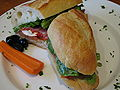
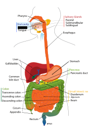
4 The Two Types of Theorizing
- 1) We are investigating a mechanical process.
- 2) We are investigating an intelligent activity.
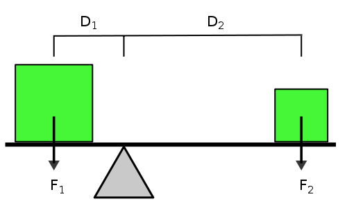
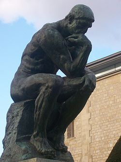
5 The Two Types of Theorizing
- Can explain family vacation as:
- Explained by auto mechanics
- Explained by human choice
- But not a mixed explanation!
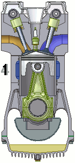
6 Idioms
- Within a type of theorizing, there are different “idioms.”
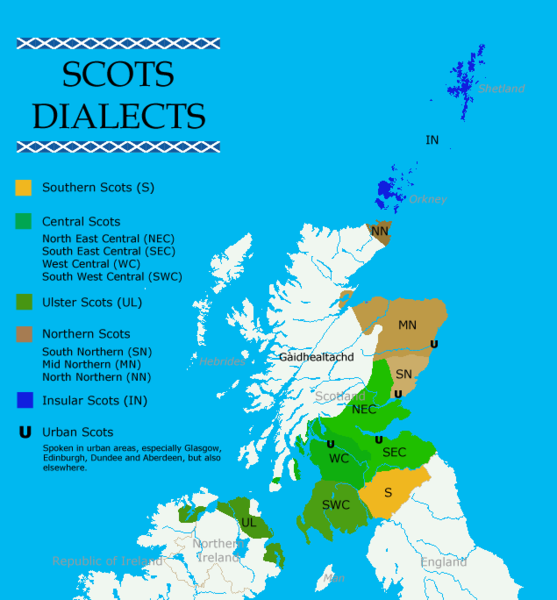
7 Idioms
- Mechanical Process
- Physics
- Chemistry
- Astronomy
- Physiology
- Neurology
- Intelligent Activity
- History
- Law
- Aesthetics
- Ethics
- Politics
8 Moving Between Idioms Requires Translation
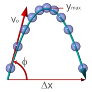
9 Economics Contains Different Idioms
- Logical Idioms
- Austrian economics
- Classical political economy
- Keynesian macroeconomics
- Mechanical Idioms
- Neoclassical microeconomics
- Neuroeconomics
- Neoclassical macroeconomics
10 The Character of Logical Econ
- Mises called this 'praxeology'
- Starting from the pre-supposition that humans act, we seek its logical consequences.
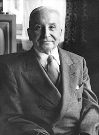
11 Human action
- Starts with agent's own interpretation of his situation.
- What matters is not some 'objective' view of what is going on, but his view.
12 Human action
- Something is unsatisfactory in that situation, prompting a response.
- Future-oriented: “[An agent's] mind imagines conditions which suit him better, and his action aims at bringing about this desired state.” – Mises
13 Human action
- “But to make a man act, uneasiness and the image of a more satisfactory state alone are not sufficient. A third condition is required: the expectation that purposeful behavior has the power to remove or at least to alleviate the felt uneasiness. In the absence of this condition no action is feasible.” – Mises
14 Human Action
- “There may be organic conditions which may make certain understandings less likely than others. A man congenitally deaf is not the most likely promoter of noise abatement because he is not apt to recognize his own situation in terms of ‘noise’…. And if an agent’s recognition of his situation is, as it may be, the recognition of an organic condition (‘I am an albino’), what constitutes it is [as] an understood situation capable of being responded to in conduct cannot be its character as an organic condition, because no such condition is capable of self-understanding or of responding to itself” – Oakeshott
15 Employing 'Logical Economics'
- Using the conclusions of praxeological reasoning, we can comprehend a great deal about economic activity
- Resolving the 'diamond-water paradox' through marginalism
- Capital goods derive their value from the predicted value of the consumer goods they are being acquired to produce
16 Neoclassical vs. Logical Economics
- Kirzner: The Bureau of Choice
- There is no real choice in neo models
- Yet they invoke choice in their explanations!
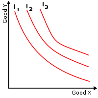
17 Perfect Competition
- “It is important to distinguish causes from effects. For an individual demander or supplier, the price is taken as a given and determines the quantity demanded or supplied. For the market as a whole, the demand and supply curves determine both price and quantity simultaneously.” – Steven Landsburg
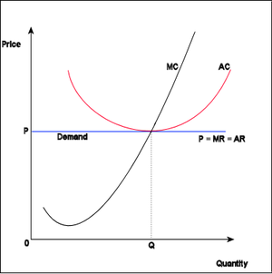
18 Perfect Competition
- “Suppliers do care about the cost of feed corn, and are willing to produce fewer pork chops at a given price when that cost goes up.” – Steven Landsburg
19 Macroeconomic Theories
- Macroeconomic models are not populated by agents, but by atoms!
- For instance, in rational expectations models all “actors” are identical
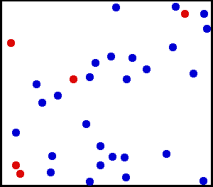
20 Neuroeconomics
- “Neuroeconomics combines neuroscience, economics, and psychology to study how people make decisions. It looks at the role of the brain when we evaluate decisions, categorize risks and rewards, and interact with each other.” – Wikipedia
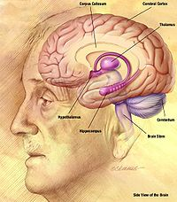
21 Neuroeconomics
- Per Vernon Smith, several of Mises’s central tenets have “been overtaken by recent trends in neuroscience,” which indicate that unconscious processes are much more important than Mises had believed. In fact, Smith claims, “the brain fools the mind into believing it is in command of mental activity.”
22 Intelligent vs. Mechanical
- “This distinction between ‘goings-on’ identified as themselves exhibitions of intelligence and ‘goings-on’ which may be made intelligible but are not themselves intelligent, is not a distinction between mental and physical or between minds and bodies regarded as entities. It is a distinction within the engagement of understanding, a distinction between ‘sciences’ (that is ideal characters) and the identities with which they are concerned. And in calling it a categorical distinction what is being asserted is that the understanding of identities recognized as themselves exhibitions of intelligence cannot be ‘reduced’ to the understanding of identities not so recognized.” – Oakeshott
23 Two Views of Reality
- Like looking at a photograph and an x-ray of the same thing, then disputing which one 'causes' the other